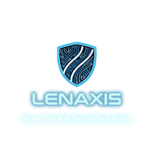

Questions en langage naturel
Décrivez votre besoin sans changer de méthode de travail.

LENAXISInterrogez les informations de risque pour préparer une décision, une visite ou un document.
Décrivez votre besoin sans changer de méthode de travail.
Rassemblez les informations utiles issues du dossier et des modules accessibles.
Exploitez les documents disponibles dans votre environnement autorisé.
Demandez une lecture des expositions, constats et mesures de prévention.
Distinguez les faits disponibles des informations à vérifier.
Préparez les questions de visite, priorités et éléments d’un support de travail.
« Quels éléments dois-je vérifier avant la prochaine visite de ce site ? » LÉNA aide à préparer les contrôles à partir du contexte disponible.
Dans LENAXIS, LÉNA accompagne le travail sur les informations accessibles à votre organisation. ASK LENA est le parcours public prévu pour découvrir cette expertise.
Questions sur le risque, la prévention et les documents. Un premier accès simple pour préciser votre besoin.
Demander un accèsAnalysez le contexte de vos sites, audits, documents et risques dans votre environnement de travail autorisé.
Accéder à LENAXISPour plusieurs sites, équipes ou usages de prévention et de crise : définissons le périmètre LENAXIS adapté.
Parler de votre projetTransmettez votre question à l’équipe LENAXIS pour organiser une démonstration sur votre besoin.
Préparer ma demande par e-mail